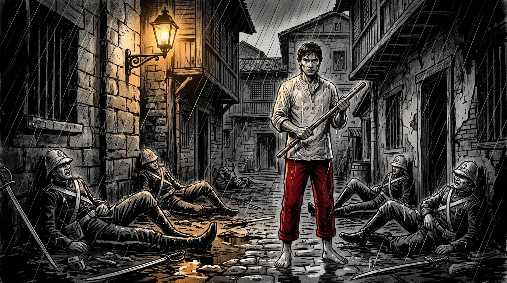
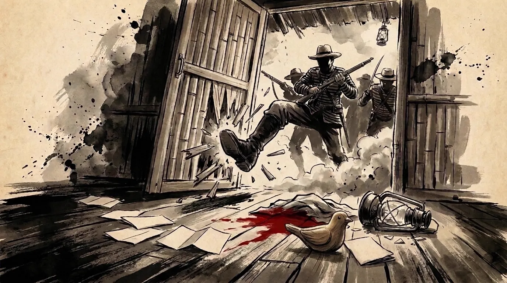
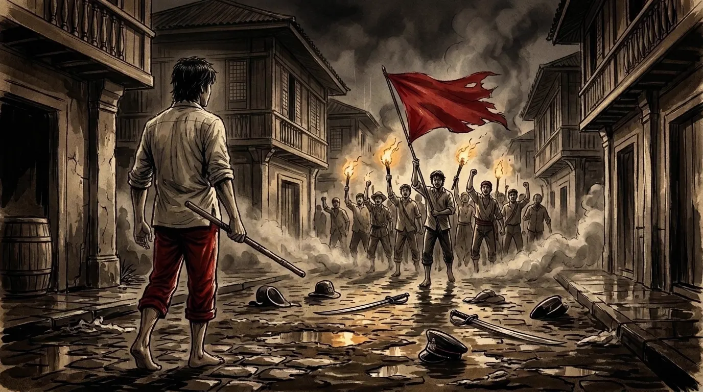
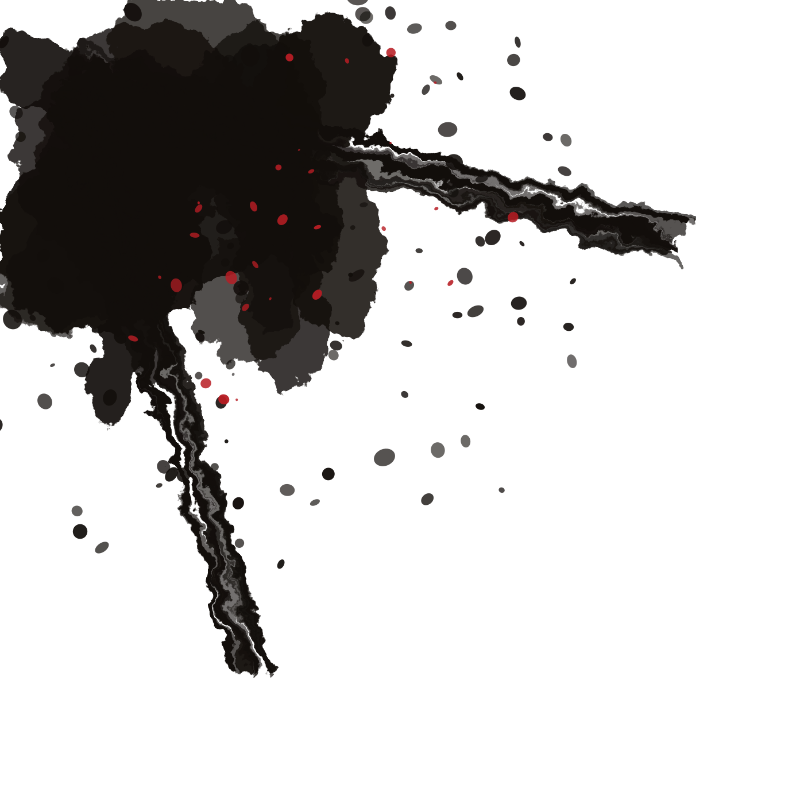
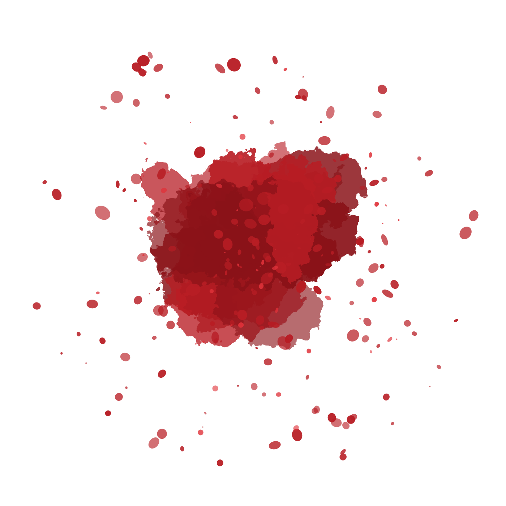
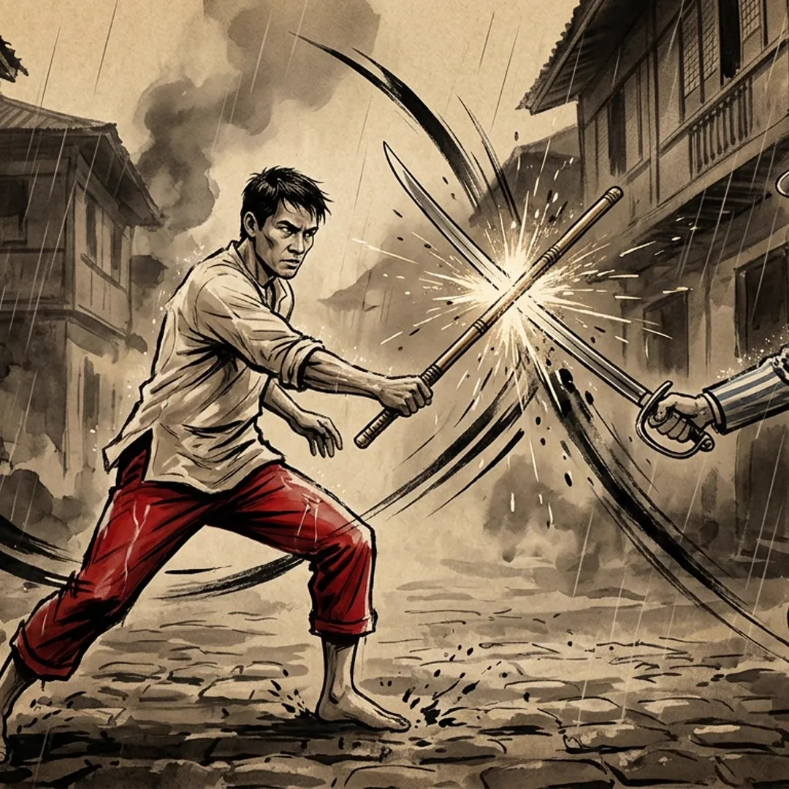

Isang tahimik na gawaan
Ang dating mandirigma ng juego todo ay namumutol na lang ngayon ng yantok. Bumibigkis siya ng mga baston para mabuhay, at iniiwan ng kanyang anak ang inukit nitong ibon sa kanyang mesa.

Ibinaon ni Vicente “Enteng” Magbanua ang kanyang patalim at iniwan ang madudugong laban ng juego todo para palakihin ang kanyang anak sa isang tahimik na eskinita sa Tondo. Hanggang sa isang patrolyang tumutugis sa mga Katipunero ang sumipa sa maling pinto.
Ang dating mandirigma ng juego todo ay namumutol na lang ngayon ng yantok. Bumibigkis siya ng mga baston para mabuhay, at iniiwan ng kanyang anak ang inukit nitong ibon sa kanyang mesa.

Naghulog ang isang tagapaghatid ng Katipunan ng mga polyetong Kalayaan sa kanyang bakuran. Makalipas ang ilang minuto, sinipa ng isang patrolya ang kanyang pinto at kinuha ang nag-iisang bagay na isinumpa niyang iingatan.

Dinampot niya ang isang gulang na baston na yantok, walang bakal, at pareho niyang isinusumpa ang mga Espanyol at ang mga rebelde. Pero sa bawat kalyeng nilalakaran niya, unti-unting nagigising ang Tondo.
← I-swipe →
Ipinagbawal ng batas ng Espanya ang pagdadala ng patalim ng mga Pilipino. Kaya itinago ng mga maestro ang patalim sa loob ng baston.
Lumiliit ang bilog habang itinataas ng opisyal ang kanyang sable. Kapag kumislap ito ng puti, buo na ang kanyang taga. Pindutin ang Q, Space, o i-tap ang arena bago tumama ang talim. Limang taga. Kapareho ito ng palugit sa laro.



Totoong bokabularyo ng arnis, nakapaloob sa mga kontrol. Malugod naming tinatanggap ang pagtutuwid ng mga nagsasanay at guro ng arnis. Iyan ang layunin ng playtest na ito.
Forehand na pahilis, backhand na pahilis, saksak sa gitna. Mabilis, mababa ang pinsala, at pundasyon ng lahat ng iba pa.
L-click · X
Lumapit ka, at ang magaang palo ay nagiging maikling suntok gamit ang puluhan ng baston. Napuputol nito ang atake ng kaaway.
Magaan, malapitan
Tatlong magaan, saka mabigat: tuloy-tuloy at paikot na hampas na tumatama sa lahat ng malapit sa iyo.
L ×3 → R-clickSalubungin ang talim sa huling 150 ms. Pinahihinto ng perpektong sangga ang oras nang saglit at nagbubukas ng pagkakataong gumanti. Ang huling sangga, may kapalit pa rin.
Q · RBMaikli at pahilis na hakbang patagilid, yapak na tatsulok sa halip na gumulong. Umalis sa linya ng putok ng riple o lumigid sa depensa.
Space · A
Kasunod ng perpektong sangga, agawin ang sable sa kanyang kamay. Pulutin ito at lumaban gamit ang kanyang bakal nang ilang sandali.
R · RT SableRiple
SableRipleNanumpa ang mga kasapi ng Katipunan at pumili ng sagisag, isang pangalan para sa digmaan. Ang kay Bonifacio ay Maypagasa. Pumili ka ng sa iyo, mag-sign up, at makapaglalaro ka agad sa iyong browser.
Nasa listahan ka na. Handa na ang kalye kapag handa ka na. Maglaro sa computer, at huwag isara ang tab na ito para sa form ng puna pagkatapos.
Ang build na ito ay isang patunay ng konsepto. Gumamit kami ng generative AI para mabuo ito nang mabilis, mailagay agad sa inyong mga kamay, at malaman kung masaya ang labanan. Ang mga bahaging gawa ng AI sa ibaba ay pansamantala at panimula lamang, hindi ang tapos na laro.
Ang UX ng laro ay nakasentro sa tao. Mga tao ang gagawa ng playtesting, pagpipino at pagbubuo ng salaysay, gameplay at ilustrasyon, simula sa inyong puna.
Ang iyong sign-up at puna ay napupunta lamang sa Google Sheet ng guro. Hindi ito ipinapadala sa anumang AI tool.